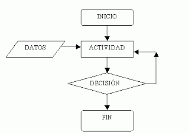
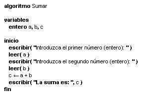
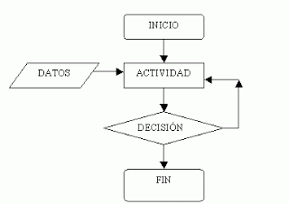
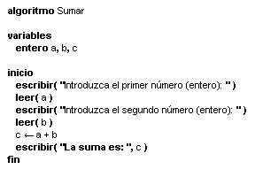

Programación Estructurada
Versión Síntetica

Modernamente, se ha usado el término algoritmo en referencia a cualquier procedimiento sistemático de cálculo, que da lugar a un resultado después de seguirse una serie de instrucciones precisas.
En el campo de la informática y la programación, se ha adoptado el término para describir cualquier serie de instrucciones precisas que dan lugar a un resultado.
1.- Finitud. Un algoritmo debe terminar en un número finito de pasos-
2.- Definitividad. Cada paso del algoritmo debe definirse de modo preciso; las acciones a realizar deben de estar especificadas rigurosamente y sin ambiguuedad para cada caso.
3.- Entrada. Un algoritmo tiene cero o mas entradas. Esto es las cantidades de datos de inicio se generan en el mismo algoritmo o se conocen previamente.
4.- Salida. Un algoritmo tiene una o más salidas. Es decir, hay datos o cantidades al término del algoritmo que tiene una relación especifica con los datos o conatidades de entrada.
5.- Efectividad. El algoritmo debe de ser efectivo. Esto significa que todad las operaciones deben ser suficientemente sencillas para poder en principio ser realizadas de modo exacto y en un tiempo finito por un procesador.
Los algoritmos pueden ser representados utilizando diversas técnicas o métodos:
Inicio.
- Poner a calentar aceite en una sartén.
- Cuando el aceite humee ligeramente, romper el huevo y verterlo en el aceite.
- Esperar que se solidifique el huevo.
- Retirar el huevo del aceite, dejar que escurra y ponerlo en un plato.
- Apagar el fuego.
Fin.
Ejemplo de algoritmo
 
Formas de representación de los algoritmos
Realice el algoritmo que calcule la multiplicación de dos numeros.
Algoritmo sumar
/*Este algortimo realiza la multiplicación de dos números que son leídos desde teclado*/
PRINCIPAL
INICIO
variables
entero a,b,c;
imprimir("Digite el primer numero: ");
leer(a);
imprimir("Digite el segundo numero: ");
leer(b);
c←a+b;
imprimir("El resultado de multiplicar %d * %d es: %d",a,b,c);
FIN